PBX — Funciones avanzadas¶
Qué es¶
Funciones de soporte que complementan la telefonía base (PBX y telefonía) y el IVR: salas de conferencia, restricciones de llamada, horarios, plantillas de configuración, y gestión de los archivos de voz que usa todo el sistema.
Cómo se usa¶
Salas de conferencia¶
Permiten unir múltiples participantes en una misma llamada (probado hasta 30 participantes). Se puede entrar por invitación desde la pantalla de la sala, o por marcación entrante (vía IVR o ruta entrante hacia el número interno de la sala).
| Campo | Qué define |
|---|---|
| Número interno | Para marcar/enrutar hacia esta sala |
| Nombre de la sala | Identificación libre |
| Contraseña de usuario / de administrador | Ambas opcionales, pero si se definen ambas, deben ser distintas |
| Esperar al anfitrión | Si los participantes esperan a que el anfitrión se conecte |
| ID de voz de entrada | Locución al entrar a la sala |
| Optimización de llamada | — |
| Detección de llamada | — |
| Modo silencioso | — |
| Aviso de entrada/salida de usuarios | Anuncia cuando alguien entra o sale |
| Música de espera | Se reproduce si la sala tiene un único participante (evita silencio total) |
| Habilitar menú | Menú de teclas dentro de la sala |
| Cantidad fija de usuarios | Limita el cupo |
| Grabar conferencia | Genera una grabación asociada al número interno de la sala — solo si está activado |
| Número que llama al invitar | Qué número ve el invitado cuando se le llama para sumarse |
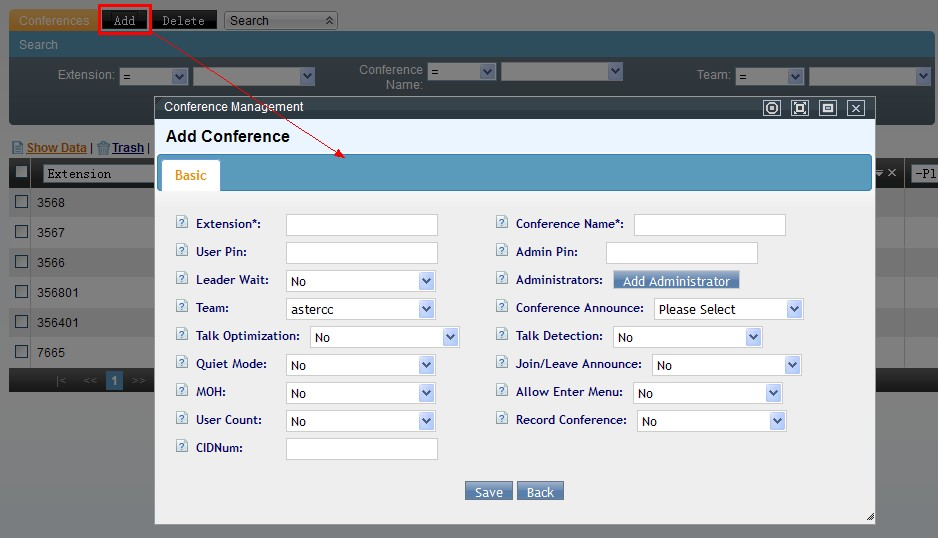
Invitar participantes: desde la sala, se elige la cuenta invitante, se seleccionan destinatarios (por equipo) o se escriben números manualmente (uno por línea), y se confirma la invitación — también es posible entrar directamente marcando un número que enruta por IVR/ruta entrante al número interno de la sala.
Administradores de la sala: desde la pantalla de la sala, con el botón "Agregar administrador" se mueven usuarios de una lista general a una lista de administradores de esa sala específica — solo esos usuarios pueden actuar como administrador dentro de la conferencia (usando la contraseña de administrador). Se puede editar esta lista en cualquier momento desde la misma pantalla.
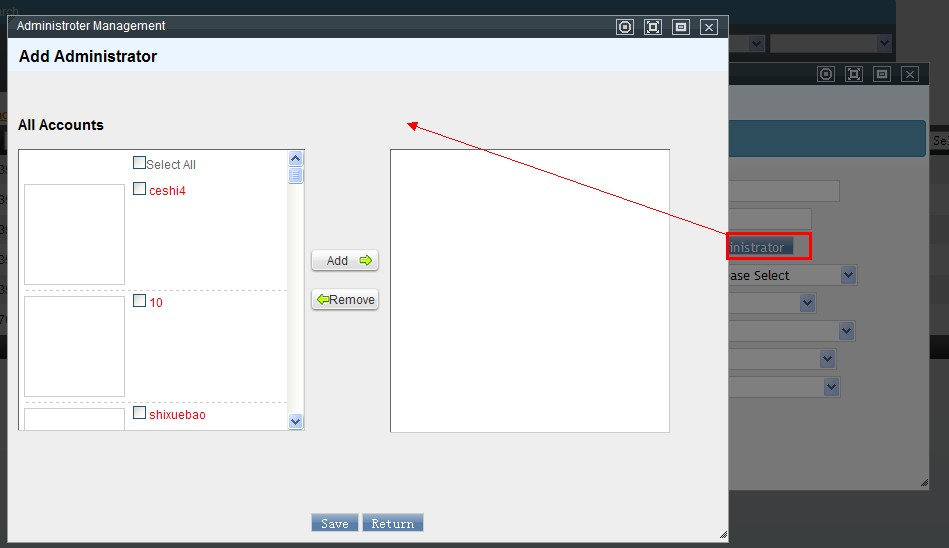
Listas blanca y negra de llamadas entrantes¶
- Lista negra: los números listados no pueden llamar al equipo/cuenta/extensión asociado.
- Lista blanca: solo los números listados pueden llamar a ese equipo/cuenta/extensión — cualquier otro número queda bloqueado.
Ambas se configuran igual: número, equipo (obligatorio), cuenta y extensión (opcionales — entre más específico, más acotada la regla), y estado.
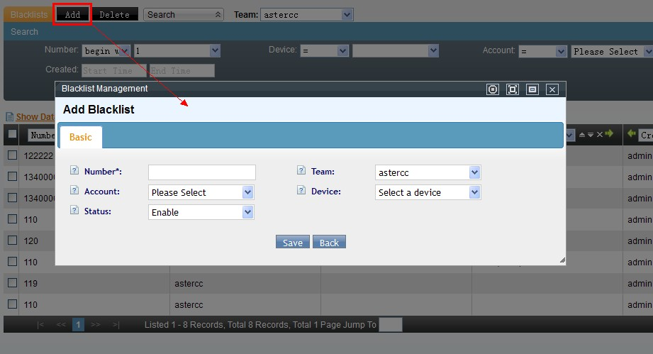
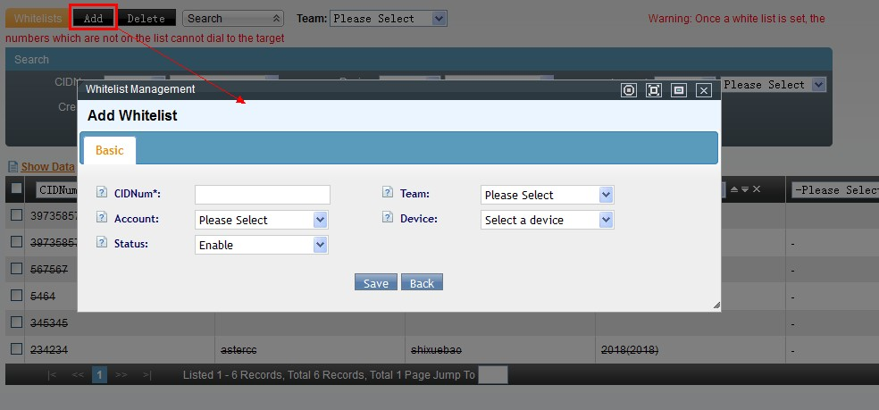
Restricción de número que llama saliente¶
Limita qué números puede usar un equipo como identificador al llamar hacia afuera, para prevenir llamadas no autorizadas.
| Campo | Qué define |
|---|---|
| Números | Uno por línea |
| Tipo de restricción | Lista negra (esos números no pueden usarse) o lista blanca (solo esos pueden usarse) |
| Equipo | A qué equipo aplica |
| Tipo de troncal | Troncal individual o grupo de troncales |
| Troncal / grupo de troncales | Cuál, según el tipo elegido — los grupos permiten fallback automático a otro troncal si el primero falla |
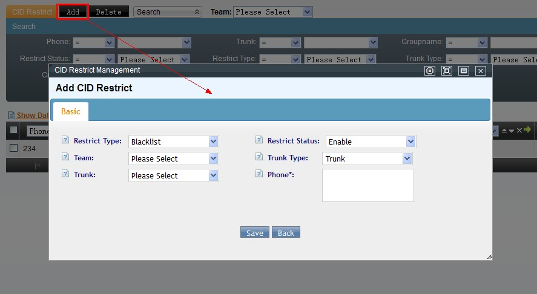
Horarios de trabajo y paquetes de horario¶
- Horario de trabajo: define un rango — fecha de inicio/fin, hora de inicio/fin, y días de la semana (mediante control deslizante) — válido para un equipo. Por ejemplo: "turno de feriado", 1–7 de octubre, 9:00–16:00 todos los días.
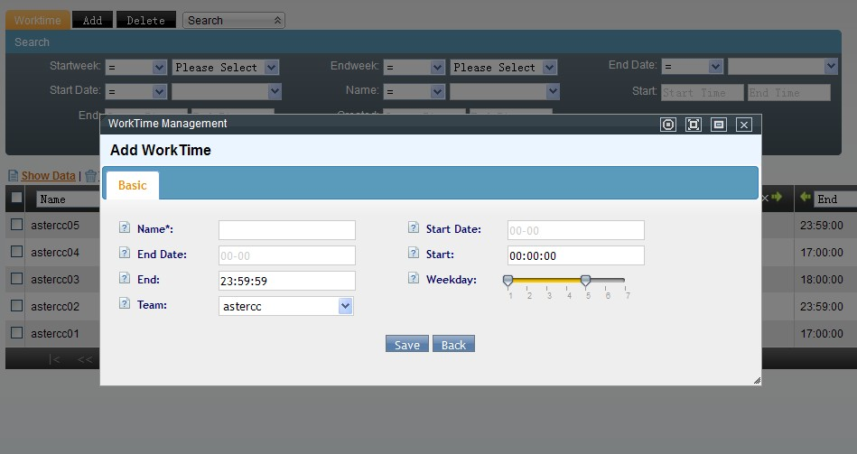
- Paquete de horario de trabajo: combina uno o más horarios de trabajo en un conjunto reutilizable, usado principalmente para acotar cuándo puede operar el marcador o una ruta entrante.
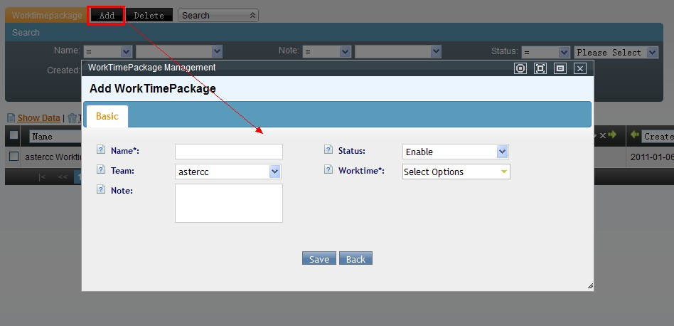
Plantillas de PBX¶
Definen parámetros de configuración reutilizables para troncales o dispositivos, por tipo de protocolo — al aplicar una plantilla a varios objetos, basta con editar la plantilla para actualizarlos a todos a la vez.
| Campo | Qué define |
|---|---|
| Nombre de la plantilla | Identificación libre |
| Tipo de plantilla | Troncal o dispositivo |
| Tipo de protocolo | Con qué protocolo se usa esta plantilla |
| Equipo | A qué equipo aplica |
| Detalle | El contenido de configuración en sí (incluye, entre otros, el modo DTMF — clave para el diagnóstico de problemas con IVR) |
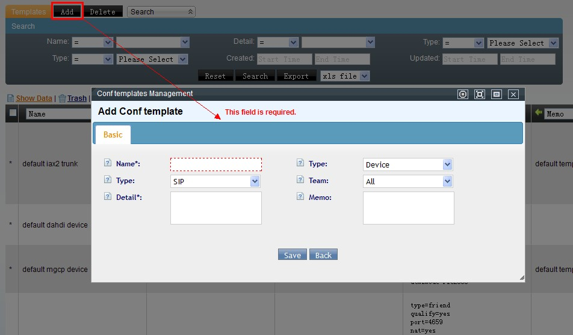
Gestión de tarjetas (hardware)¶
Pantalla en inglés (orientada a hardware) para configurar tarjetas de voz físicas — digitales (E1/T1) y analógicas — organizadas en dos tablas separadas por tipo.
| Campo | Qué define |
|---|---|
| Status | Si la configuración actual de este hardware está activa |
| Group | Grupo de canales — todos los canales de una misma tarjeta comparten grupo |
| Channels | Cuántos canales de la tarjeta se van a usar |
| Advanced Settings | Configuración avanzada libre |
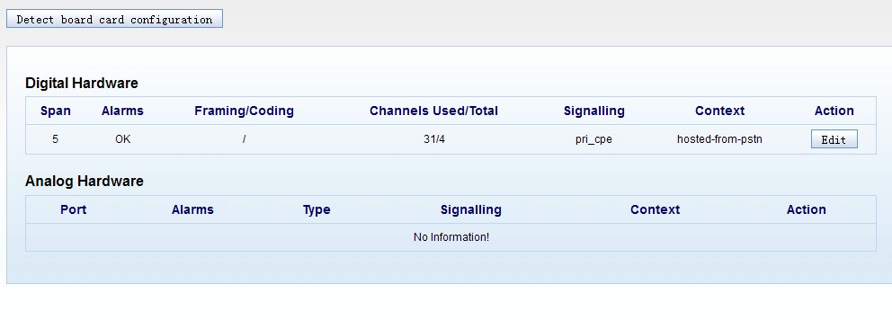
Los cambios quedan en un archivo de configuración pendiente hasta hacer clic en la barra de recarga — recién ahí se sobrescribe la configuración activa.
Gestión de aplicaciones¶
Permite registrar aplicaciones personalizadas dentro del dialplan de Asterisk.
| Campo | Qué define |
|---|---|
| Nombre de la aplicación | Identificación libre |
| Context | Contexto de Asterisk asociado |
| Equipo | A qué equipo pertenece |
| Identificador inicial | — |
| Prioridad | — |
| Número interno | Para poder invocarla desde otros objetos del sistema |
| Descripción | Notas libres |
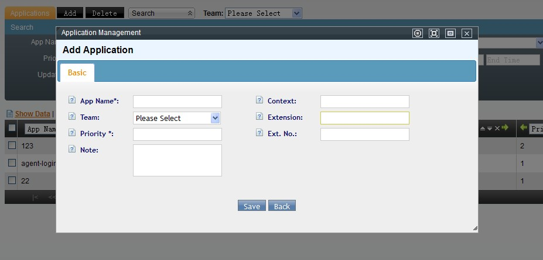
Gestión de archivos de voz¶
Repositorio central de archivos de audio (formato requerido: WAV, 8000 Hz, 16 bits, mono) usados por IVR, colas, grupos de timbrado, etc.
- Alta individual desde la propia pantalla.
- Cada archivo puede reproducirse en línea o descargarse desde el listado.
- Se puede asociar (o no) a un equipo específico — si no se asocia, cualquier equipo puede usarlo.
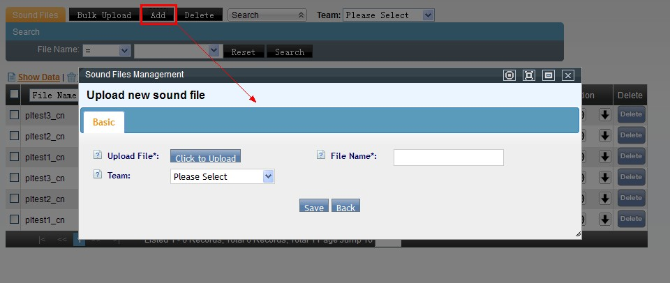
Carga masiva vía FTP: para volúmenes grandes de locuciones, es posible subirlas por FTP al directorio configurado en Sistema → Configuración del sistema → Configuración básica, siguiendo esta estructura obligatoria:
soundfiles/
├── <identificador-de-equipo>/
│ ├── cn/ ← locuciones en chino de ese equipo
│ └── en/ ← locuciones en inglés de ese equipo
├── cn/ ← locuciones en chino sin equipo asociado (uso general)
└── en/ ← locuciones en inglés sin equipo asociado
Luego, en PBX avanzado → Carga masiva de archivos de voz, se elige el equipo (o se deja vacío para ver los archivos generales), se listan los .mp3/.wav encontrados en esa carpeta, y se marca:
- Qué archivos van a Gestión de archivos de voz (checkbox general por archivo).
- Qué idioma de cada archivo va, además, directo a Voz de llamada (checkbox por idioma) — evita tener que repetir el alta manual descrita en esa sección.
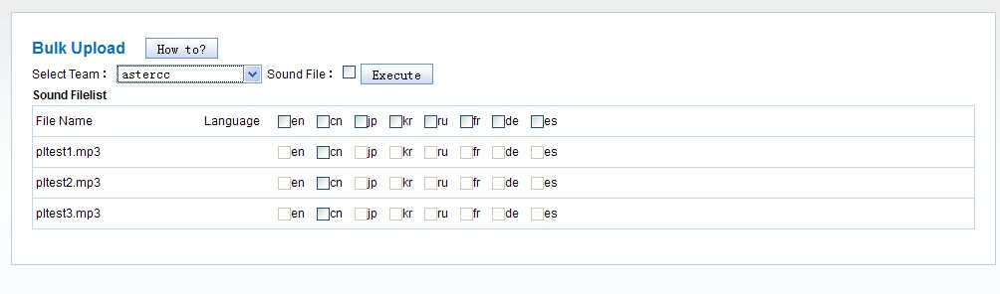
Voz de llamada¶
Envuelve un archivo de voz (o varios, uno por idioma) bajo un nombre lógico reutilizable en IVR, colas y grupos de timbrado — de modo que el mismo "aviso de bienvenida" pueda reproducirse en el idioma correspondiente a cada llamada sin duplicar configuración.
| Campo | Qué define |
|---|---|
| Nombre de la voz de llamada | Identificación lógica reutilizable |
| Descripción | Notas libres |
| Equipo | A qué equipo pertenece |
| Archivo de voz | Selecciona, por idioma, cuál archivo (de los subidos en Gestión de archivos de voz) corresponde |
Tip
Un registro de voz de llamada sin ningún archivo asociado aparece resaltado en rojo en el listado — es una señal visual de que falta completar la configuración.
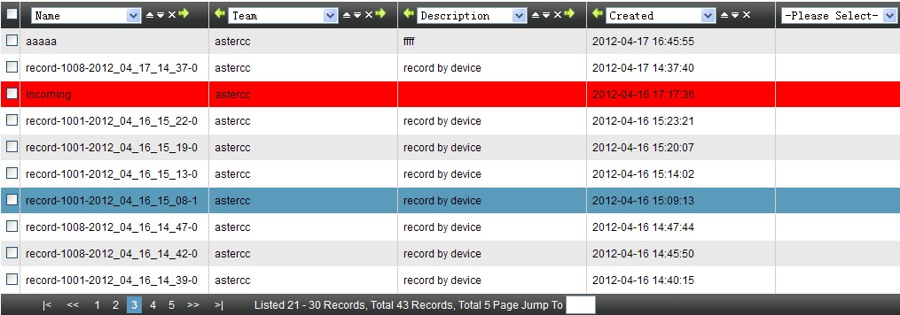
Gestión de música en espera¶
Registra, bajo un nombre lógico reutilizable, qué archivo de voz (de los subidos en Gestión de archivos de voz) se usa como música en espera para un equipo — la misma lógica de "nombre reutilizable + equipo + archivo" que Voz de llamada, pero para el rol de música en espera en vez de locución.
| Campo | Qué define |
|---|---|
| Nombre de la música en espera | Identificación reutilizable |
| Identificador | Etiqueta corta para distinguir esta música en espera de otras |
| Equipo | A qué equipo pertenece |
| Archivo de voz | Archivo (del equipo) a usar como música en espera |
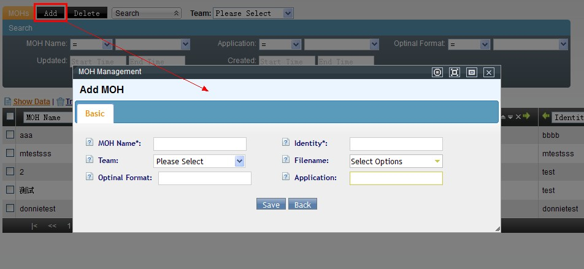
Los campos "Formato" y "Modo de aplicación" están reservados para una función aún no implementada.
Esta música en espera reutilizable es la misma que puede seleccionarse en el campo "Música en espera" de extensiones, colas, grupos de timbrado y salas de conferencia.
Aplicación de mensaje de voz¶
Usada dentro de una acción "dejar mensaje" del IVR — por ejemplo, para capturar consultas fuera de horario laboral y que un agente las gestione al día siguiente.
| Campo | Qué define |
|---|---|
| Nombre de la aplicación | Identificación reutilizable desde el IVR |
| Llamada inicial a webservice | Opcional — si el mensaje debe disparar un webservice al iniciar la grabación |
| Directorio / nombre de archivo | Dónde y cómo se guarda el mensaje grabado — se recomienda incluir variables como [year]-[mon]-[day]-[hour]-[min]-[sec]-[callerid]-[sessionid] para evitar sobrescribir archivos (mismas variables internas que en IVR) |
| Aviso inicial | Locución antes de empezar a grabar |
| Beep | Si suena un aviso sonoro al iniciar la grabación |
| Duración máxima / silencio máximo | 0 = sin límite; el silencio máximo corta automáticamente la grabación |
| Tecla de fin | Tecla que el cliente presiona para terminar de grabar |
| Aviso de cierre / reintentos máximos | Si avisa que la grabación está por terminar, y cuántas veces se puede regrabar |
| Aviso de tiempo restante | Solo aplica si el aviso de cierre está activo |
| Tipo de aviso | Por defecto o vía webservice (con su propia dirección/método/parámetros) |
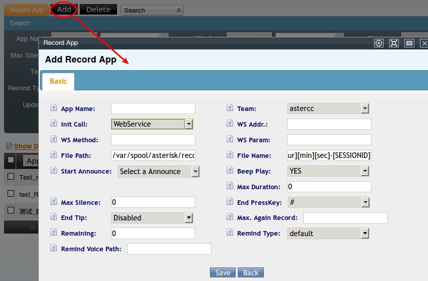
Referencia rápida¶
| Tarea | Dónde |
|---|---|
| Crear sala de conferencia | PBX avanzado → Salas de conferencia |
| Restringir llamadas entrantes | PBX avanzado → Lista negra / Lista blanca |
| Restringir número saliente | PBX avanzado → Restricción de número saliente |
| Definir horarios | PBX avanzado → Horarios de trabajo / Paquetes de horario |
| Plantillas reutilizables | PBX avanzado → Plantillas de PBX |
| Subir locuciones | PBX avanzado → Gestión de archivos de voz |
| Asociar locución a un idioma | PBX avanzado → Voz de llamada |
| Definir música en espera reutilizable | PBX avanzado → Gestión de música en espera |
| Buzón de voz dentro de un IVR | PBX avanzado → Aplicación de mensaje de voz |
Fuentes¶
raw/zh/模块使用说明/pbx高级管理/会议室.txtraw/zh/模块使用说明/pbx高级管理/会议室管理_可设录音.txtraw/zh/模块使用说明/pbx高级管理/呼入黑名单.txtraw/zh/模块使用说明/pbx高级管理/白名单管理.txtraw/zh/模块使用说明/pbx高级管理/外呼主叫号码限制.txtraw/zh/模块使用说明/pbx高级管理/工作时间.txtraw/zh/模块使用说明/pbx高级管理/工作时间包.txtraw/zh/模块使用说明/pbx高级管理/pbx模版.txtraw/zh/模块使用说明/pbx高级管理/板卡管理.txtraw/zh/模块使用说明/pbx高级管理/应用管理.txtraw/zh/模块使用说明/pbx高级管理/语音文件管理.txtraw/zh/模块使用说明/pbx高级管理/呼叫语音管理.txtraw/zh/模块使用说明/pbx高级管理/留言应用.txtraw/zh/模块使用说明/pbx高级管理/等待音乐管理.txtraw/zh/模块使用说明/pbx高级管理/批量添加语音文件.txtraw/en/module_manual/advanced/conference.txtraw/en/module_manual/advanced/blacklist.txtraw/en/module_manual/advanced/whitelist.txtraw/en/module_manual/advanced/callerid_number_restrict.txtraw/en/module_manual/advanced/worktime.txtraw/en/module_manual/advanced/worktimepackage.txtraw/en/module_manual/advanced/pbxtemplate.txtraw/en/module_manual/advanced/dahdi.txtraw/en/module_manual/advanced/sys_application.txtraw/en/module_manual/advanced/soundfile.txtraw/en/module_manual/advanced/announcement.txtraw/en/module_manual/advanced/record_app.txtraw/en/module_manual/advanced/moh.txtraw/en/module_manual/advanced/addsoundfiles.txtraw/en/module_manual/advanced.txt